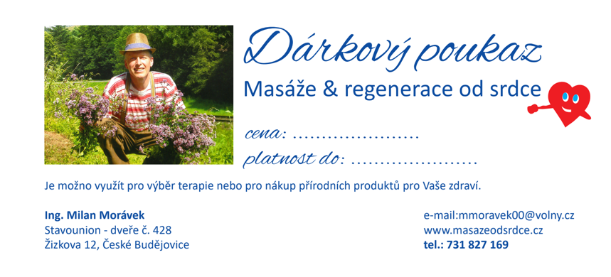

Aktuální ceník našich masáží a regeneračních služeb. Pro permanentky a kombinované balíčky platí výhodnější ceny.
| Služba | Délka | Cena |
|---|---|---|
| Masáž klasická šíje, záda | 30 min | 430 Kč |
| Masáž klasická šíje, záda, nohy | 60 min | 850 Kč |
| Masáž na osvěžení unavených rukou | 45 min | 670 Kč |
| Masáž na osvěžení unavených nohou | 45 min | 670 Kč |
| Masáž komplexní (šíje, záda, ruce, nohy) | 90 min | 1 200 Kč |
| Masáž intuitivní, kombinovaná | 30 min | 430 Kč |
| Permanentka | Počet | Cena |
|---|---|---|
| Permanentka 12 × 60 min + bylinný čaj dle výběru | 12 × | 8 400 Kč |
| Permanentka 6 × 60 min + bylinný čaj dle výběru | 6 × | 4 400 Kč |
| Služba | Délka | Cena |
|---|---|---|
| Reflexní masáž rukou | 45 min | 580 Kč |
| Reflexní masáž nohou | 45 min | 580 Kč |
| Masáž na podporu lymfy | 60 min | 800 Kč |
| Masáž na podporu lymfy | 90 min | 1 180 Kč |
| Masáž a ošetření spoušťových bodů | 45 min | 600 Kč |
| Medová detoxikační masáž | 30 min | 450 Kč |
| Baňkování | 45 min | 600 Kč |
| Zvuková harmonizační a regenerační lázeň | 45 min | 590 Kč |
| GuaSha masáž páteře — ošetření jadeitem | 30 min | 390 Kč |
| Služba | Délka | Cena |
|---|---|---|
| Manuální lifting obličeje — bio arganový olej, kys. hyaluronová | 60 min | 800 Kč |
| Manuální lifting obličeje — rozšířená péče | 90 min | 1 160 Kč |
| Služba | Délka | Cena |
|---|---|---|
| Regeneračně-detoxikační zábal (humát, lignohumát, kys. jantarová, silymarin) | 10 min | 160 Kč |
Odevzdání odpadních látek do vnějšího prostředí kůží a vstřebávání látek do organismu. Dochází k prokrvení tkání, regeneraci namožených tkání, analgetickému přírodnímu efektu při bolestech, zpomalení stárnutí buněk, ochraně proti volným radikálům, pozitivnímu účinku na problémy s kůží (lupénka, ekzémy, akné, vyrážky), pomoci u zánětlivých stavů vnitřních orgánů přímým působením přes kůži.
| Služba | Délka | Cena |
|---|---|---|
| Energetické čištění a víceúrovňová harmonizace | 30 min | 290 Kč |
| Bioptronová lampa — světelná terapie | 20 min | 50 Kč |
| Posílení mitochondrií červeným světlem (610–760 nm) svaly, kosti, klouby — 760–1400 nm | 20 min | 150 Kč |
| Pulsní laserová terapie Handy Cure (jako příplatek k masáži) | — | +50 Kč |
| Služba | Doba | Cena |
|---|---|---|
| Měření zdravotního stavu přístrojem Supertronic charakteristika osobnosti, oslabení dle EAV a reflexní terapie | cca 60 min | na dotaz |
| Individuální optimalizace stravy a pitného režimu rozbor metabolického typu, písemné vyhodnocení do 7 dnů | cca 60 min | 850 Kč |
| Souhrn potravin, nápojů a doplňků pro Váš metabolismus s regeneračními nebo blokujícími účinky · bylinný čaj od srdce zdarma | — | na dotaz |
K čemu slouží měření Supertronic: alternativní analýza zdravotního stavu, zjištění konkrétních zdravotních oslabení a testování nejefektivnějších přírodních přípravků na zjištěná oslabení těla. Současně se provádí poměrně široký rozbor osobnosti s velkým množstvím konkrétních údajů.
Pozn.: Ceny jsou aktualizované k roku 2026. Pro objednání kontaktujte studio telefonicky nebo přes rezervační formulář.
